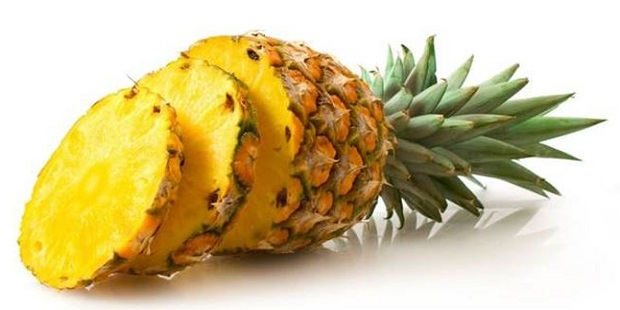
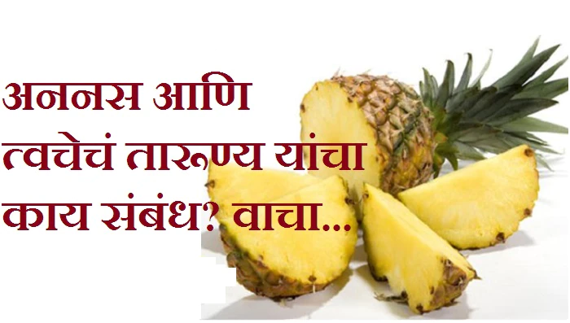

अननस बद्दल माहिती मराठीत – Pineapple Information in Marathi
 अननस हे कंदवर्गातील फळ आहे. नदीच्या काठी मोकळ्या जमिनीत याची लागवड होते. अननसाचे रोप लावल्यावर एक ते दोन वर्षात फळे येतात. अननसाचे झाड साधारणतः तीन फुटांपर्यंत वाढते. अननस हे मूळ अमेरिकेतील फळ आहे.
अननस हे कंदवर्गातील फळ आहे. नदीच्या काठी मोकळ्या जमिनीत याची लागवड होते. अननसाचे रोप लावल्यावर एक ते दोन वर्षात फळे येतात. अननसाचे झाड साधारणतः तीन फुटांपर्यंत वाढते. अननस हे मूळ अमेरिकेतील फळ आहे.
पाने :- अननसाची पाने हिरव्या रंगाची व तीन फुटांपर्यंत लांब व तीन ते चार इंच रुंद असतात. फळे:- अननसाची फळे रोपाच्या मध्यभागी येतात.
चव :- अननसाची फळे आंबटगोड असतात. रंग :- अननसाचे फळ कच्चे असताना हिरवे व पिकायला लागल्यावर भुरकट पिवळे दिसते.
आकार :- याचा आकार लंबगोल असतो. फळ काटेरी असते. उत्पादन क्षेत्र :- रत्नागिरी, कुलाबा, दक्षिण भारत इ.ठिकाणी. तोटे:- उपाशीपोटी अननस खाणे हानिकारक ठरू शकते.
उत्पादने :- अननसाचा ज्यूस, सरबत, जेली, जाम इ. तयार केले जाते. अननसापासून दोर तयार करता येतो. अननसाच्या पानांपासून एक प्रकारचे कापड बनवितात.
जाती:- अननसाच्या क्वीन व मॉरिशस यादोन जाती आहेत. घटकद्रव्ये :- अननसामध्ये सी जीवनसत्त्व असते. फायदे :- उष्णतेचे विकार अननस खाल्ल्याने नाहीसे होतात.
अननस एक खाद्य फळ असलेली उष्णकटिबंधीय वनस्पती आहे आणि ब्रोमेलियासी कुटुंबातील सर्वात आर्थिकदृष्ट्या महत्त्वपूर्ण वनस्पती आहे.
अननस दक्षिण अमेरिकेत स्वदेशी आहे, जिथे अनेक शतकांपासून त्याची लागवड केली जाते. 17 व्या शतकात अननसाची युरोपमध्ये ओळख झाल्याने ते लक्झरीचे महत्त्वपूर्ण सांस्कृतिक चिन्ह बनले.
1820 च्या दशकापासून, अननस व्यावसायिकरित्या ग्रीनहाऊस आणि अनेक उष्णकटिबंधीय वृक्षारोपणांमध्ये घेतले जात आहे. पुढे, हे जागतिक उत्पादनात तिसरे सर्वात महत्वाचे उष्णकटिबंधीय फळ आहे.
20 व्या शतकात, हवाई विशेषतः अमेरिकेसाठी अननसाचे प्रमुख उत्पादन होते; तथापि, 2016 पर्यंत, कोस्टा रिका, ब्राझील आणि फिलिपिन्स हे जगातील अननसाच्या उत्पादनाच्या जवळपास एक तृतीयांश होते.
अननस एक लहान झुडूप म्हणून वाढतात; अनपॉलिनेटेड वनस्पतीची वैयक्तिक फुले अनेक फळे तयार करतात. फळाच्या वरच्या भागावर किंवा साइड शूटमधून तयार होणाऱ्या ऑफसेटमधून आणि साधारणपणे एका वर्षाच्या आत या वनस्पतीचा प्रसार होतो.
अननस खाण्याचे फायदे – Benefits of Pineapple in Marathi
.रोग-लढाऊ अँटीऑक्सिडंट्स समाविष्टीत आहे.
.अननसचे एन्झाईम्स पचन कमी करू शकतात.
.कर्करोगाचा धोका कमी करण्यास मदत करू शकेल.
.रोग प्रतिकारशक्ती वाढवू आणि दाह कमी करू शकेल.
.संधिवातची लक्षणे सहज कमी होऊ शकतात.
.शस्त्रक्रिया किंवा कठोर व्यायामानंतर वेगवान पुनर्प्राप्ती होऊ शकते.
.आहारात रूचकर आणि जोडण्यास सुलभ.
अननस बद्दल माहिती मराठीत

अननस हे बाहेरुन कडक परंतु आतुन रसरशीत फळ असते.
याची आंबट-गोड चव सर्वांनाच खुप पसंत आहे.
अननस असे खाण्याऐवजी याचा ज्यूस काढून प्यायले जाते.
फ्रूट सॅलाडमध्येही याचा उपयोग केला जातो. अननस फक्त चव नाही
तर आरोग्यासाठी देखील खुप फायदेशीर आहे. एक अननस अनेक आजार दूर करते.
जाणुन घेऊ अननसच्या 7 मोठ्या फायद्यांविषयी.
अननस (प्रती 100 ग्रॅम) मध्ये उपस्थित पोषक घटक:
i)ऊर्जा: 50 किलो कॅलरीज
ii)फायबर: 1.4 ग्रॅम, प्रथिने: 0.54 ग्रॅम
iii)कार्बोहायड्रेट: 13.12 ग्रॅम
iv)साखर: 9.85 ग्रॅम
v)पोटॅशियम: 109 मिलीग्रॅम
vi)मॅगनीझ: 0.927 मिलीग्रॅम
vii)कॅल्शियम: 13 मिली
viii)फॉस्फोरस: 8 मिलीग्रॅम
ix)व्हिटॅमिन सी: 47.8 मिलीग्रॅम

1) इम्यूनिटी वाढवते
अननसमध्ये ब्रोमेलेन नावाचे एक तत्त्व असते. ज्यामध्ये अँटी-इनफ्लेमेटरी आणि फायब्रीनोलिटिक तत्त्व असते. हे तत्त्व इम्यून सिस्टम मजबूत करण्याचे काम करते याव्यतिरिक्त अननसमध्ये व्हिटॅमिन सी उच्च प्रमाणात असते. जे इम्यून सिस्टमला वाढवून इंफेक्शन पासुन लढण्याची क्षमता प्रदान करते.
2) हाडांची मजबूती
अननस आपल्या हाडांसाठी खुप चांगले असते. कारण यामध्ये मॅगनीज असते. मॅगनीज एक असे पोषकतत्व आहे जे हाडांच्या विकासामध्ये महत्त्वाची भूमिका निभावते. याव्यतिरिक्त ब्रोमेलेनचे अँटी इन्फ्लेमटरी तत्त्व अर्थराइटिस सारख्या गंभीर समस्या दूर करण्याचे काम करते.
3)डायबीटीजसाठी चांगले
गोड फळ असले तरी अननसमध्ये ग्लाइसेमिक इंडेक्स आणि कॅलरी खुप कमी असतात. म्हणजेच डायबीटीजचे रुग्ण कसलीच काळजी न करता हे फळ खाऊ शकता.
4)हृद्य रोगपासुन वाचवते
अननसमध्ये असे अँटीऑक्सीडेंट्स असतात जे फ्री रॅडिकल्सला स्वच्छ करुन बॅड कोलेस्ट्रॉलचे ऑक्सीडेशन होण्यापासुन वाचवतात आणि हृदय रोगांची शक्यत कमी करतात. अननसमध्ये असलेले ब्रोमेलेन धमन्यामधील रक्त जमा होणे आणि सूज येण्यापासुन थांबवते. यामुळे हृदयाच्या आजारांची भिती कमी होते.
5)पचनक्रिया चांगली राहते
अननस फायबरचा चांगला स्त्रोत आहे. फायबर पचन क्रियेला चांगले ठेवते आणि आतड्यांना निरोगी ठेवते. यामध्ये उपलब्ध ब्रोमेलेन पोटाच्या एसिडला नियंत्रणात ठेवते. ज्यामुळे एसिडिटी देखील होत नाही.
6)ग्लोइंग स्किन (चमकदार त्वचा)
अननसाचे अँटीऑक्सीडेंटस एजिंगचे लक्षण म्हणजेच सुरकूत्यांपासुन दूर ठेवते. याव्यतिरिक्त व्हिटॅमिन सी त्वचेचा ग्लो वाढवते आणि स्किनला निरोगी ठेवते.
7)कँसरची शक्यता कमी
अनेक स्टडीज मध्ये समोर आले आहे की, अननस खाल्ल्याने कँसरची भिती दूर होऊ शकते. कारण यामध्ये कँसरपासुन बचाव करणारे तत्त्व उपलब्ध असतात. एका संशोधनात सांगितले गेले की, अननसमध्ये उपलब्ध ब्रोमेलेन तुम्हाला कोलोरेक्टल कँसर पासुन वाचवते.
शारीरिक कमजोरीसाठी घरगुती उपाय: अननस शरीर, मेंदू आणि हृदयाला तरोताजा करतो आणि शीतलता देतो.
150 मिली अननस रस घ्या.
त्यात अर्धा लिंबाचा रस घालावा.
अननसचे हे सरबत दिवसातून एक वेळा प्यावे.
यामुळे शरीराची दुर्बलता कमी होऊन मन आणि हृदय फार मजबूत होतात.
अपचन झाले असल्यास घरगुती उपाय: अननस आपल्या पाचन व्यवस्थेसाठी अमृतासारखे काम करते.
75 मिली अननसाचे रस घ्या.
त्यात 75 मि.ली. सफरचंदाचे रस, 1/4 चमचे आले रस आणि 15 ग्रॅम मध चांगले मिक्स करावे.
दिवसातील कोणत्याही वेळी, 1 वेळा हे मिश्रण घ्यावे.
यामुळे, अन्नाचे सामान्य पचन होते व अपचनाची समस्या समाप्त होते.
शरीरावरील फोड्यांसाठी घरगुती उपाय: फोड्यांसाठी अननस खूप फायदेशीर आहे.
p>
अननसाचे तुकडे बारीक करून घट्ट पेस्ट बनवा.
अननसाची ही पेस्ट 4-5 तास फोडयांवर लावून ठेवा आणि नंतर ते पाण्याने धुवावे.
1 पेला अननसाचा रस देखील प्या.
दररोज असे केल्याने, बरेच फायदे होतात आणि काही दिवसांत शरीरावर फोड देखील चांगले होतात.
पोटातील वेदने साठी घरगुती उपाय: पोटासंबंधित अनेक रोगांमध्ये अननस लाभ प्रदान करते
अननसाचे 100 ग्रॅम काप घ्या.
यात 1/2 चमचा कूटलेले जीरे, 1 चिमटी मिरपूड पावडर आणि चवीपुरते मीठ घाला.
या सर्व गोष्टी ताबडतोब खाऊन घ्याव्यात. पोटात दुखत असल्यास आपल्यास त्वरीत आराम मिळेल.
किडनी स्टोन्ससाठी घरगुती उपाय: किडनी स्टोन्ससाठी अननस देखील अतिशय फायदेशीर आहे.
कमीतकमी 1 ते 2 महिने दररोज 1 वेळा अननसाच्या रसाचा 1 ग्लास प्यावा.
याच्यामुळे, मूत्रपिंडातील दगड हळूहळू लहान होतात आणि नंतर ते मूत्रामार्गे बाहेर पडतात.निसर्गाने दिलेल्या हे आश्चर्यकारक फळ अननस, संबंधित आजारांवर वरदाना सारखेच आहे व आरोग्यसाठी लाभदायक आहे. म्हणूनच सर्व प्रकारच्या फळांमध्ये अननसला विशेष स्थान आणि महत्त्व आहे. केवळ चवीने नव्हे तर घरच्या उपायांसाठी देखील त्याचे महत्त्व अधिक वाढते. म्हणून, निरोगी राहण्यासाठी रोज अननस आहारातून घ्यावे.
मुंबई : अननस तुमचे त्वजा तजेलदार करतं, सुंदर बनवतं, एवढंच नाही तुमची पचन क्षमता सुधारतं, व्हिटामीन सी हिरड्यांना निरोगी ठेवतं. पाहा अननसचे आरोग्याला होणारे १० फायदे
१) अननसमधील विटामीन सी स्कीन इलास्टिसिटी वाढवते आणि सुंदर बनवते.
२) अननसमधील ब्रोमेलीन एंजाईम डायझेशन सुधारतात.
३) अननसमधील व्हिटॅमिन सी हिरड्यांना निरोगी ठेवते.
४) अननस संधीवात सारख्या आजाराच्या वेदना कमी करते.
५) अननसमधील पोटॅशियम ब्लड प्रेशर कंट्रोल करण्याचे काम करते.
६) अननसमधील अॅटीऑक्सिंडेन्ट कॅन्सरची शक्यता कमी करते आणि सेल्स हेल्दी ठेवतात.
७) सर्दी खोकल्याची शक्यता कमी करते, आणि कफ दूर करण्यासाही ते फायदेशीर आहे.
८) अननसमधील मॅग्निज हाडे आणि कनेक्टिंग टिश्यूज कमी करतात.
९) अननसाचा ज्यूस, गळ्यातील खरखर कमी करते, सायनसमध्ये त्याचा फायदा होतो.
१०) अननसमधील अँटीऑक्सिडन्ट आणि विटामीन सी डोळ्यावर होणार वयाचा परिणाम कमी करतं.